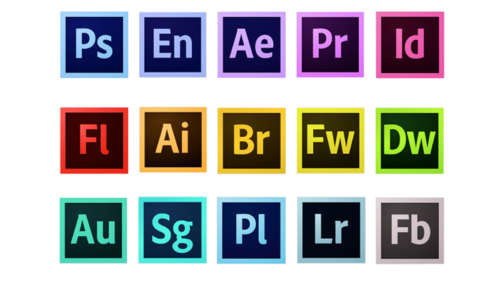

L'Open Source de nos jours
Contexte
Depuis sa création et grâce au fait qu'il puisse être constamment amélioré, l'opensource est devenu très compétitif face aux nombreux logiciels payants. Il est aujourd'hui utilisé dans de nombreux domaines tels que les entreprises, les administrations publiques, les médias, la médecine, l'enseignement, etc. Les logiciels opensource font partis de notre quotidien, les plus connus étant : Libre Office, Wordpress, Ubuntu, Firefox, VLC Media Player, GIMP, Inkscape, Audacity, etc.
Ceci pose une question d'abord économique. L'open source a apporté une rupture dans l'économie du logiciel en abaissant fortement les coûts. En réduisant les frais de système d'exploitation, des bases de données, des logiciels serveurs, des outils de développement et d'administration on réduit par extension sensiblement le coût général d'un projet.
Cependant le coût structurel lui reste incompressible, les infrastructures, le personnels, les moniteurs restent une dépense incontournable dans la réalisation d'un projet. Le succès rencontré reste tout de même mitigé car beaucoup des utilisateurs de machines trustées par les GAFAM (acronyme des géants du web) ne sont pas amenés à travailler avec l'opensource. Cependant il est indéniable que malgré sa catégorisation d'univers "de geek réfractaire" l'opensource est désormais présent partout.
Pour parler chiffres nous dirons (chiffres CNLL 2017): Chiffre d'affaires secteur libre: 4,426 milliards d'euros; hausse par rapport à 2016: + 8%; chiffre d'affaires secteur libre estimé en 2020: 5,65 milliards d'euros; taux estimé de pénétration du marché en 2020: 11,11%.
Libre Graphic Meeting
Le Libre Graphic Meeting est une rencontre internationale annuelle dont le but est de développer le sujet des logiciels libres et Open Source. Les communautés d'Inkscape, de GIMP, de Scribus, de sK1, de Blender, d’Open Clip Art Library, d’Open Font Library et d'autres logiciels se réunissent à travers le Create Project.
Depuis 2006 se rassemblent professionnels, artistes, amateurs, et tout utilisateurs quel qu'il soit. Ainsi il permet la rencontre de ces différents acteurs et entraînent la collaboration, l'effet de rassemblement étant propice à la création les logiciels s'en trouvent améliorés car le meeting est une occasion pour les participants venus des 4 coins du monde de se voir en réel, leurs échanges s'en trouvent facilités.
Ce meeting est aussi par extension un point stratégique d'où se construisent une multitudes de branches tels que le graphisme vectoriel, bitmap, typographie, 3D et autres champs des arts visuels. Ce processus permet de désenclaver et mettre en relation des pratiques souvent segmentés dans leurs industries.
C'est par cet esprit de collaboration que cette effervescence créative prend forme et se répercute dans le champs du design. Les artistes sont mit en relation directe avec les créateurs/concepteurs des outils qu'ils utilisent pour exprimer leur créativité et peuvent de cette façon exprimer des désirs ou des suggestions menant vers une amélioration utile des outils. Par exemple on notera l'ajout de la gestion de la couleur dans le logiciel GIMP, offrant ainsi la possibilité de modifier ou gérer l'image de la même façon que son homologue Adobe Photoshop qui lui est une licence privée et payante soumise aux règles de droits d'auteur et de propriété intellectuelles.
Le collectif Open Source Publishing propose alors de créer un environnement de travail privé pour les designers jusqu'alors soumis aux outils existants (Adobe pour ne citer qu'eux) qui mettent en valeur le cloud comme une source de partage qui n'est en réalité qu'un leurre selon eux.
Outils et plateformes
Git
Git est un logiciel créé en 2005 par Linus Torvalds et est primordial pour le travail collaboratif. L’outil permet de travailler à plusieurs sur un projet, de façon simultanée ou non, sans risquer d’écraser des modifications, tout en gardant une trace des changements effectués au cours du développement, ainsi que l’auteur de ces derniers. De plus, il permet aussi d’avoir plusieurs versions d’un même projet en parallèle, l’utilisateur pouvant changer entre chacune d’elles facilement.
et est primordial pour le travail collaboratif. L’outil permet de travailler à plusieurs sur un projet, de façon simultanée ou non, sans risquer d’écraser des modifications, tout en gardant une trace des changements effectués au cours du développement, ainsi que l’auteur de ces derniers. De plus, il permet aussi d’avoir plusieurs versions d’un même projet en parallèle, l’utilisateur pouvant changer entre chacune d’elles facilement.
Github
Github est une plateforme web qui utilise Git et qui permet d'apporter le partage et l'aspect collaboratif de Git avec tous les utilisateurs de Github. De ce fait, cette plateforme aide beaucoup à la démocratisation des logiciels open-sources: les projets publics sur la plateforme sont accessibles par tout le monde. Ces moyens permettent, entre autre:
- De consulter et d'apprendre à partir du code de qualité (la transparence du code peut pousser a créer du code de qualité/soigné)
- De créer une véritable communauté autour de certains projets
- Le versioning des différentes versions d'un projet (chaque version du projet est accessible, éditable, duplicable et partageable, sans altérer les autres versions)
L'open source aide grandement le partage de techniques numériques et la conception d'outils alternatifs. Le fait de concevoir ses propres outils peut permettre de créer des logiciels "sur-mesure", une réelle compréhension du "workflow" d'un projet, et ce, en échangeant avec d'autres développeurs.